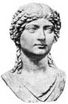

Agrippina (15-59) Roma İmparatoru Claudius’u (MÖ 10-MS 54) öldürmeye karar verdiğinde kolaylıkla onun yanına yaklaşabiliyordu çünkü evliydiler. 54 yılında imparatora bir tabak dolusu zehirli mantar verdi. Bu hareketiyle kocasını öldürüp Roma tarihinin en talihsiz dönemlerinden birinin başlamasına neden oldu.

Antik Roma’nın en güçlü kadınlarından bir olan Agrippina, İmparator Augustus’un (MÖ 63-MS 14) soyundan geliyordu. Etkili bir politik hanedanın üyesiydi. Kardeşi Kaligula (12-41), 37-41 yılları arasında imparator olmuştu. 49 yılında üçüncü kocası Claudius’la evlendi. Agrippina’nin ilk evliliğinden Lucius Domitius Ahenobarbus (37-68) adında bir çocuğu vardı. Lucius, daha sonra imparator olacak olan ünlü Neron’dan başkası değildir.
Agrippina, Claudius’la evlendiği sırada dahi acımasız bir komplocu olarak tanınmıştı. Erkek kardeşini öldürmeyi amaçlayan bir komploya adı karışmış ve Akdeniz’de bir adaya sürgüne gönderilmişti. O sürgündeyken ailesi Roma’daki gücünü korudu. Aslına bakılırsa Claudius onun amcasıydı. Agrippina bu evliliği tamamen politik sebeplerle yapmıştı. Bu sayede oğlu Neron imparatorluğun halefi olacaktı.
Claudius ise 53 yılından sonra farklı düşünmeye başladı. Tahta kendi biyolojik oğlu Britannicus’un (41-55) geçmesini istiyordu. Agrippina kocasının Neron’u halefi olmaktan çıkarmasını engellemek için en uygun çözüm yolunun kocasını öldürmek olduğuna karar verdi.
Neron’un hükümranlığı, gaddarlığı ve beceriksizliği ile efsaneleşecekti. Hıristiyanlar’ı hedef alan ilk büyük zulüm onun döneminde gerçekleşti. Üvey kardeşi Britannicus’un da içinde bulunduğu binlerce muhalifini idam ettirdi. 64 yılındaki büyük yangın sırasında Roma cayır cayır yanarken Neron sadece keman çalmıştı. 68 yılında görevden alındı ve intihar etti.
İronik bir biçimde kurbanlarından biri de annesi Agrippina’ydı. 16 yaşında tahta geçtiği sırada büyük ölçüde annesinin etkisi altındaydı. Ne var ki annesi, Poppaea Sabina ile olan ilişkisini uygun görmedi. Poppaea ile evlenmek için önündeki bütün engelleri ortadan kaldırmak isteyen Neron, 59 yılında Agrippina’nın öldürülmesini emretti. Agrippina öldürüldüğü sırada 44 yaşındaydı.
Ek Bilgiler
1- Barok bestekar George Handel (1685-1759), 1709 yılında Agrippina adlı bir opera yazmıştır.
2- Claudius’un üçüncü karısı Messalina (20-48), kötü bir üne sahipti. Yaşlı Pliny’e (23-79) göre bir fahişe ile yarışa girmiş ve yirmi dört saatte yirmi beş erkekle birlikte olarak onu yenmişti.
3- Poppaea Sabina’nın ikinci kocası olan Marcus Salvius Otho (32-69), 69 yılında imparator olmuş ve üç ay boyunca tahtta kalmıştır. Sık sık imparator değişimlerinin yaşandığı o yıl “Dört İmparator Yılı” olarak tarihe geçmiştir. Otho, rakiplerinden birine karşı verdiği savaşı kaybedince intihar etmiştir.